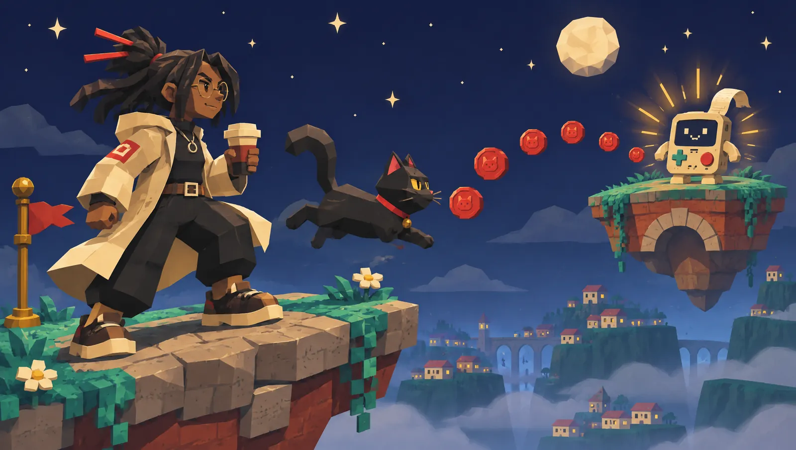
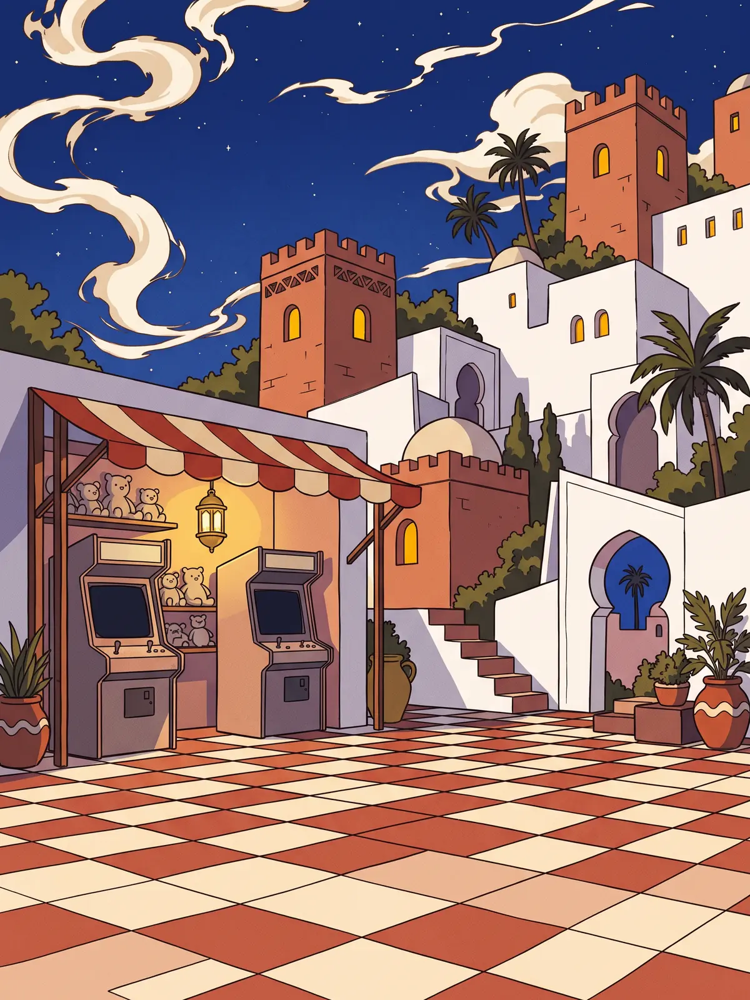
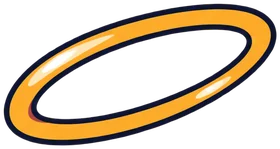
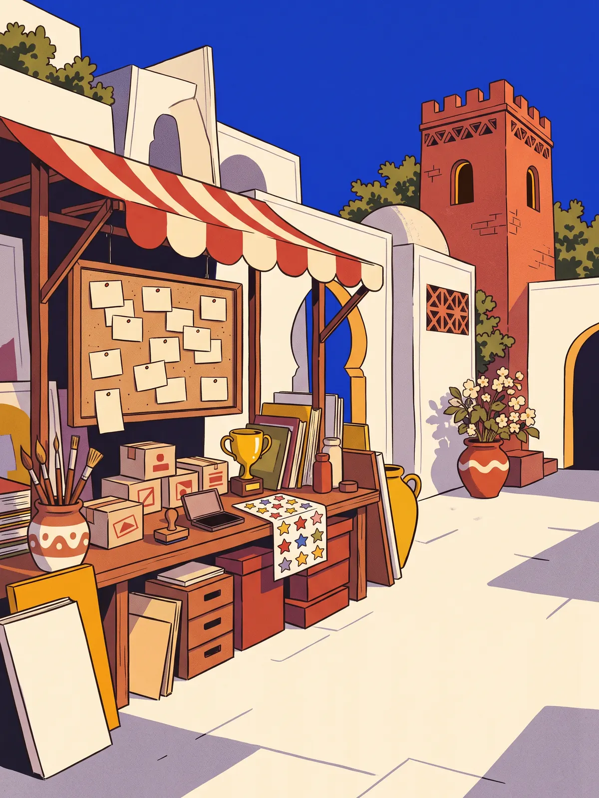
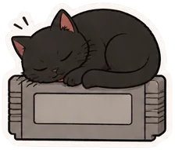

/ MAÎTRE-COURS · LA GAMIFICATION
Le jeu juste.
La gamification sans poudre aux yeux : ce que c’est, pourquoi ça marche, ce que dit la recherche, ce que ça rapporte, quand ça abîme, et comment ce site s’en sert. Huit niveaux, huit stickers, toutes les sources.
La carte de la Lanterne · exemple inventé
Ouvrir l’atlas
Choisir un quartier
Les quartiers
0 quartier fait sur 8



Le dossier · Acte I · 1 / 8
Niveau 1
C’est quoi, au juste ? · avec Kūro
La libraire de la Lanterne veut que les élèves du cours du soir reviennent. Avant de parler de carte de fidélité, elle cherche ce que le mot gamification veut dire.
La règle
La gamification prête un ressort du jeu à une activité qui reste la vraie.

L’exercice de terrain
Gamification, jeu entier ou habillage ?
Ouvert
Rangez chaque ligne dans sa case : la raison, tirée de la leçon et de ses sources, s’affiche dessous. L’exercice est fait quand chaque ligne est à sa place. Rien n’est envoyé.
La gamification, c’est emprunter au jeu quelques-uns de ses ressorts pour une activité qui n’est pas un jeu : un cours, une appli, un site. L’activité reste la vraie ; le jeu lui prête sa façon de donner envie.
La définition« L’usage d’éléments de design de jeu dans des contextes non ludiques » : la définition proposée par Deterding et ses collègues en 2011, celle que la recherche reprend depuis.
Ce que ce n’est pasCe n’est pas fabriquer un jeu entier, et ce n’est pas un habillage. Si on retire le jeu et qu’il ne reste rien d’utile, ce n’était pas de la gamification.
Le piège des pointsEn 2010, la conceptrice de jeux Margaret Robertson écrit que le mot juste pour ce qu’elle voit alors est « pointsification » : des points et des badges posés sur n’importe quoi, sans le jeu.
Ranger quatre exemples : gamification, jeu entier ou habillage
-
Une barre de progression dans un cours en ligne
-
Un jeu vidéo éducatif complet
-
Des points et des badges posés sur une page qui ne sert à rien d’autre
-
Huit stickers à collectionner dans un cours qui reste un cours
C’est quoi, au juste ? · Le cours reste un cours ; on lui prête un ressort du jeu.


Le dossier · Acte I · 2 / 8
Niveau 2
Pourquoi ça marche · avec Kūro
La carte montrerait les séances déjà suivies. La libraire se demande à quoi cela sert.
La règle
Un bon jeu nourrit trois besoins : se sentir capable, libre, relié.

L’exercice de terrain
Chaque ressort sous son besoin
Ouvert
Rangez chaque ligne dans sa case : la raison, tirée de la leçon et de ses sources, s’affiche dessous. L’exercice est fait quand chaque ligne est à sa place. Rien n’est envoyé.
Un bon jeu ne retient pas par ses points. Il nourrit trois besoins que la psychologie décrit depuis longtemps : se sentir capable, se sentir libre, se sentir relié. Quand une activité les nourrit, on y revient sans y être poussé.
CapableUn retour immédiat, des paliers à sa portée : on voit qu’on progresse. C’est le besoin de compétence.
LibreOn choisit son chemin et son rythme. Ce qui devient obligatoire cesse d’être un jeu. C’est le besoin d’autonomie.
ReliéJouer avec d’autres, ou appartenir à un monde commun. C’est le besoin de lien.
D’où ça vientDe la théorie de l’autodétermination de Ryan et Deci (2000) : trois besoins psychologiques, la compétence, l’autonomie et le lien. Satisfaits, ils renforcent la motivation ; contrariés, ils l’affaiblissent.
Ranger cinq ressorts sous les trois besoins
-
Un retour immédiat après chaque réponse
-
Choisir son chemin et son rythme
-
Jouer avec d’autres
-
Des paliers à sa portée
-
Appartenir à un monde commun
Les sources du cours [3]
Pourquoi ça marche · La carte montre le chemin fait : elle sert la compétence.


Le dossier · Acte I · 3 / 8
Niveau 3
Ce que dit la recherche · avec Raven
Avant de payer l’imprimeur, la libraire lit ce que disent les études.
La règle
Des effets réels et modestes, qui dépendent du contexte : rien de plus à promettre.

L’exercice de terrain
Ce que disent les études, et ce qu’elles ne disent pas
Ouvert
Rangez chaque ligne dans sa case : la raison, tirée de la leçon et de ses sources, s’affiche dessous. L’exercice est fait quand chaque ligne est à sa place. Rien n’est envoyé.
Est-ce que ça aide vraiment à apprendre ? En 2020, Sailer et Homner ont réuni 38 publications, soit 40 expériences. Leur réponse : oui, des effets petits mais réels, et pas tous aussi solides.
Les savoirsSur ce qu’on apprend : g = 0,49. C’est le résultat le plus stable de l’étude, même en ne gardant que les expériences les plus rigoureuses.
La motivationSur la motivation : g = 0,36. Les auteurs le disent moins stable que le premier.
Les actesSur ce qu’on fait vraiment : g = 0,25, le plus petit des trois, et lui aussi moins stable.
La nuanceDeux revues plus larges le disent autrement. Hamari et ses collègues (2014, 24 études) : des effets positifs, qui dépendent beaucoup du contexte et des personnes. Koivisto et Hamari (2019, 819 études) : des résultats plutôt positifs, avec une part remarquable de résultats mitigés.
Ranger cinq phrases : les études le disent, ou non
-
La gamification aide à apprendre, avec des effets petits mais réels
-
La gamification marche à tous les coups
-
L’effet le plus stable porte sur ce qu’on apprend
-
L’effet sur ce qu’on fait vraiment est le plus fort des trois
-
Les effets dépendent beaucoup du contexte et des personnes
Ce que dit la recherche · Des effets réels et modestes : ne rien promettre de plus.


Le dossier · Acte II · 4 / 8
Niveau 4
Les mécaniques, une à une · avec Techno Pigeon
L’imprimeur propose deux maquettes de carte pour le même nombre de séances. La libraire hésite.
La règle
On choisit une ou deux mécaniques pour un but, pas dix pour décorer.

L’exercice de terrain
Reconnaître la mécanique
Ouvert
Rangez chaque ligne dans sa case : la raison, tirée de la leçon et de ses sources, s’affiche dessous. L’exercice est fait quand chaque ligne est à sa place. Rien n’est envoyé.
Une mécanique de jeu répond à un ressort précis. On en choisit une ou deux pour un but, pas dix pour décorer.
L’avance offerteNunes et Drèze (2006) : une tâche de huit étapes présentée comme dix étapes dont deux déjà faites est plus souvent terminée, et plus vite. Commencer à 2 sur 10 engage plus que commencer à 0 sur 8.
L’approche du butKivetz et ses collègues (2006), dans un vrai café : plus les clients approchent du café offert, plus ils achètent souvent. On accélère près de la ligne d’arrivée.
Les badgesSur Stack Overflow, Anderson et ses collègues (2013) voient l’activité monter à l’approche d’un badge, puis retomber. Une étude de 2020 nuance : environ 20 % des utilisateurs y réagissent.
Les sériesDuolingo écrit à ses actionnaires, en novembre 2026, mener des centaines d’expériences, notamment sur les notifications et les séries, pour faire revenir ses utilisateurs : 64,9 millions par jour au troisième trimestre 2026.
La collectionCompléter une série d’objets : c’est ce que font les huit stickers de ce cours. Vous avez la mécanique sous les yeux.
Ranger quatre observations sous leur mécanique
-
Une carte de dix cases, dont deux déjà tamponnées
-
Plus le café offert est proche, plus on achète souvent
-
L’activité monte avant une récompense affichée sur le profil, puis retombe
-
Revenir chaque jour pour ne pas rompre le compte des jours
Les mécaniques, une à une · Une carte qui commence avec deux cases tamponnées.

Le dossier · Acte II · 5 / 8
Niveau 5
Ce que ça fait à une marque · avec Kūro
Une carte, c’est aussi une voix. La libraire se demande ce que la sienne dira de la Lanterne.
La règle
Le jeu donne à une marque une voix, un monde et une raison de revenir ; il sert le message, il ne le remplace pas.

L’exercice de terrain
Ce que le jeu donne à une marque, et où il la dessert
Ouvert
Rangez chaque ligne dans sa case : la raison, tirée de la leçon et de ses sources, s’affiche dessous. L’exercice est fait quand chaque ligne est à sa place. Rien n’est envoyé.
Ce niveau est notre lecture de praticiens, pas un résultat d’étude. Le jeu donne à une marque trois choses qu’un logo seul ne donne pas : une voix, un monde, et une raison de revenir.
Une voixIci, Kūro juge vos réponses en deux mots. Une marque qui réagit à ce que vous faites a un caractère ; une marque qui récite n’en a pas.
Un mondeL’atelier de nuit, la radio, la console DOURO·8, les sceaux : tout vient du même endroit. On reconnaît la marque sans voir son logo.
Un rituelDes tampons, des sceaux, des stickers : de petites fins à atteindre, qui donnent une raison de finir la page et d’y revenir.
La limiteSi le jeu cache l’offre, le prix ou le contact, il travaille contre la marque. Le jeu sert le message ; il ne le remplace pas.
Ranger quatre éléments : une voix, un monde, un rituel, ou contre la marque
-
Kūro juge vos réponses en deux mots
-
La radio, la console DOURO·8 et les sceaux viennent du même endroit
-
Des tampons à gagner jusqu’au bout de la page
-
Un jeu qui cache le prix ou le contact
Ce que ça fait à une marque · La Lanterne garde sa voix : c’est elle qui fait revenir.


Le dossier · Acte III · 6 / 8
Niveau 6
Ce que ça rapporte : des cas réels · avec Raven
On cite à la libraire des chiffres impressionnants. Elle demande d’où ils viennent.
La règle
Lire d’où vient un chiffre : une étude publiée, une entreprise, ou une campagne de marque.

Faire l’exercice de terrainL’exercice de terrain
Peser chaque source
Ouvert
Rangez chaque ligne dans sa case : la raison, tirée de la leçon et de ses sources, s’affiche dessous. L’exercice est fait quand chaque ligne est à sa place. Rien n’est envoyé.
Quatre cas, chacun avec sa source et sa limite. Deux chiffres viennent des entreprises elles-mêmes, et un troisième d’une campagne de marque : c’est dit à chaque fois.
StarbucksLe programme Starbucks Rewards compte 35,8 millions de membres actifs aux États-Unis, et 59 % des montants encaissés dans les cafés que l’enseigne exploite elle-même aux États-Unis viennent de ses membres. Chiffres publiés par Starbucks pour le trimestre clos fin juin 2026.
DeloitteDeloitte a ajouté des éléments de jeu à sa plateforme de formation des cadres. La Harvard Business Review (2013) rapporte 37 % d’utilisateurs en plus à y revenir chaque semaine. Un chiffre de l’entreprise, sans groupe de comparaison.
FolditUn jeu en ligne où l’on replie des protéines. En 2011, ses joueurs produisent en trois semaines un modèle assez juste pour que des chercheurs déterminent la structure d’une enzyme d’un rétrovirus du singe. Le résultat est publié dans Nature Structural & Molecular Biology.
La loterie des radarsStockholm, 2010 : pendant trois jours, les conducteurs qui respectent la limite participent à une loterie. La vitesse moyenne annoncée passe de 32 à 25 km/h. Un cas célèbre mais fragile : trois jours, pas de groupe témoin, et un chiffre donné par le sponsor, Volkswagen.
Ranger quatre cas selon leur source
-
Starbucks Rewards : 59 % des montants encaissés viennent des membres
-
Deloitte : 37 % d’utilisateurs en plus chaque semaine
-
Foldit : la structure d’une enzyme trouvée grâce aux joueurs
-
La loterie des radars : de 32 à 25 km/h
Ce que ça rapporte : des cas réels · Lire d’où vient un chiffre avant de le croire.

Le dossier · Acte III · 7 / 8
Niveau 7
Quand ça abîme · avec Kūro
La libraire pensait promettre une réduction à la fin de la carte. Elle vérifie d’abord ce qui fait échouer ces projets.
La règle
Le jeu peut démotiver, pousser, piéger : la plupart des échecs viennent de la conception.

L’exercice de terrain
Repérer ce qui abîme
Ouvert
Rangez chaque ligne dans sa case : la raison, tirée de la leçon et de ses sources, s’affiche dessous. L’exercice est fait quand chaque ligne est à sa place. Rien n’est envoyé.
Le jeu peut aussi démotiver, pousser, piéger. Savoir où ça casse fait partie du métier.
La récompense promiseLepper, Greene et Nisbett (1973) : des enfants qui aimaient déjà une activité s’y intéressent moins après l’avoir faite pour une récompense promise. Ceux qui reçoivent une récompense surprise, ou rien, gardent leur intérêt.
La classe gamifiéeHanus et Fox (2015) suivent deux classes pendant seize semaines. Celle qui a des badges et un classement finit moins motivée, moins satisfaite, avec de moins bonnes notes à l’examen. Une petite étude, mais elle prévient : le classement n’est pas un cadeau pour tout le monde.
La prévision de GartnerEn novembre 2012, le cabinet Gartner prévoit que 80 % des applications gamifiées de l’époque manqueront leurs objectifs d’ici 2014, surtout à cause d’une mauvaise conception. C’est une prévision, pas une mesure.
Les piègesL’autorité américaine de protection des consommateurs (FTC) publie en 2022 un rapport sur les « dark patterns », ces interfaces qui poussent à des choix qu’on n’aurait pas faits. La même année, l’éditeur de Fortnite accepte de verser 245 millions de dollars pour rembourser des achats non voulus.
Ranger cinq pratiques : ça abîme, ou ça garde l’intérêt
-
Promettre une récompense pour une activité qu’on aimait déjà
-
Offrir une récompense surprise, après coup
-
Laisser faire l’activité sans rien promettre
-
Une classe avec badges et classement, seize semaines
-
Une interface qui pousse à un achat qu’on n’aurait pas fait
Quand ça abîme · Pas de pression, pas de récompense promise d’avance.

Le dossier · Acte III · 8 / 8
Niveau 8
Le jeu juste : nos règles, ici · avec Kūro
La libraire écrit les règles de sa carte en regardant comment ce site joue.
La règle
Rien ne démarre seul, le prix ne joue pas, un dessin plutôt qu’une remise, rien ne sort d’ici, pas de pression.

L’exercice de terrain
Notre règle, ou ce que nous refusons ?
Ouvert
Rangez chaque ligne dans sa case : la raison, tirée de la leçon et de ses sources, s’affiche dessous. L’exercice est fait quand chaque ligne est à sa place. Rien n’est envoyé.
Ce site joue, et il s’est donné des règles. Les voici, avec l’endroit où les vérifier.
Rien ne démarre seulLa radio, les clips, Kūro : tout attend votre geste, et tout s’arrête d’un geste. Sur un appareil réglé sur « moins de mouvement », rien ne bouge. Aller voir : la radio
Le prix ne joue pasLa calculatrice DOURO·8 a l’air d’une console, mais son reçu additionne des lignes et son total est leur somme exacte. Le jeu rend le prix lisible ; il ne le maquille pas. Aller voir : la calculatrice
Un dessin, pas une remiseSept sceaux ouvrent un dessin. Huit niveaux donnent huit stickers. Aucune récompense ici ne s’échange contre votre adresse ou contre un achat. Aller voir : la ronde de nuit
Rien ne sort d’iciTampons, sceaux et stickers restent dans votre navigateur. Ils ne sont envoyés nulle part ; il n’y a ni compte ni classement.
Pas de pressionAucune série à ne pas rompre, aucun compte à rebours. Vous pouvez partir et revenir : votre progression vous attend.
Ranger cinq pratiques : ce site le fait, ou s’y refuse
-
La radio attend votre geste pour jouer
-
Une série de jours à ne pas rompre
-
Sept sceaux pour ouvrir un dessin
-
Une remise en échange de votre adresse
-
Un classement entre visiteurs
Le jeu juste : nos règles, ici · La carte de la Lanterne donne un tirage du cours, jamais une remise.
La carte de la Lanterne · exemple inventé ·
C’est quoi, au juste ?
La Lanterne · librairie inventée
Le journal de bord
0 / 8 note
Faites un quartier jusqu’au bout, la situation puis l’exercice, pour inscrire la décision de l’équipe au journal.
Acte I · Comprendre
- C’est quoi, au juste ?
Une carte de fidélité, alors ? Reste à savoir quel besoin elle nourrirait.
Le cours reste un cours ; on lui prête un ressort du jeu.
- Pourquoi ça marche
Le besoin trouvé, la libraire veut savoir si ça marche vraiment.
La carte montre le chemin fait : elle sert la compétence.
- Ce que dit la recherche
Prudente, elle passe aux mécaniques, une à une.
Des effets réels et modestes : ne rien promettre de plus.
Acte II · Les mécaniques
- Les mécaniques, une à une
La carte dessinée, reste ce qu’elle dit de la Lanterne.
Une carte qui commence avec deux cases tamponnées.
- Ce que ça fait à une marque
Avant de lancer sa carte, la libraire regarde des cas réels.
La Lanterne garde sa voix : c’est elle qui fait revenir.
Acte III · Le prix et la limite
- Ce que ça rapporte : des cas réels
Les chiffres lus, la libraire cherche où ça casse.
Lire d’où vient un chiffre avant de le croire.
- Quand ça abîme
Il reste à écrire les règles de sa carte.
Pas de pression, pas de récompense promise d’avance.
- Le jeu juste : nos règles, ici
La carte est prête.
La carte de la Lanterne donne un tirage du cours, jamais une remise.
Le sac · inventaire
Le sac
0 souvenir sur 8
Chaque quartier fait ajoute un souvenir au sac. Vos progrès restent dans ce navigateur, s’il les garde ; rien ne part d’ici.
Acte I · Comprendre
- Niveau 1Kūro à la manetteSouvenir pas encore gagné
- Niveau 2Yasser, pouce levéSouvenir pas encore gagné
- Niveau 3Kūro sur la DOURO·8Souvenir pas encore gagné
Acte II · Les mécaniques
- Niveau 4Kūro et la coupeSouvenir pas encore gagné
- Niveau 5Tope làSouvenir pas encore gagné
Acte III · Le prix et la limite
- Niveau 6Kūro dort sur la cartoucheSouvenir pas encore gagné
- Niveau 7Kūro attrape l’étoileSouvenir pas encore gagné
- Niveau 8Le sceau à la patteSouvenir pas encore gagné
Huit sur huit. La planche de stickers est à vous, pour vos messages ou votre écran.
Télécharger la planche
Les sources du cours
Les sources du cours (21)
Chaque chiffre de ce cours vient de l’une de ces sources. Là où une étude est petite, ou un chiffre donné par l’entreprise elle-même, le niveau le dit.
- Deterding, S., Dixon, D., Khaled, R. & Nacke, L. (2011). From game design elements to gamefulness: defining “gamification”. MindTrek ’11. doi.org(nouvel onglet)
- Robertson, M. (2010). Can’t play, won’t play. Quoted in J. Juul, “Gamification backlash roundup” (2011). jesperjuul.net(nouvel onglet)
- Ryan, R. M. & Deci, E. L. (2000). Self-determination theory and the facilitation of intrinsic motivation, social development, and well-being. American Psychologist, 55(1). doi.org(nouvel onglet)
- Sailer, M. & Homner, L. (2020). The Gamification of Learning: a Meta-analysis. Educational Psychology Review, 32(1). doi.org(nouvel onglet)
- Hamari, J., Koivisto, J. & Sarsa, H. (2014). Does Gamification Work? A Literature Review of Empirical Studies on Gamification. HICSS 47. doi.org(nouvel onglet)
- Koivisto, J. & Hamari, J. (2019). The rise of motivational information systems: A review of gamification research. International Journal of Information Management, 45. doi.org(nouvel onglet)
- Nunes, J. C. & Drèze, X. (2006). The Endowed Progress Effect: How Artificial Advancement Increases Effort. Journal of Consumer Research, 32(4). doi.org(nouvel onglet)
- Kivetz, R., Urminsky, O. & Zheng, Y. (2006). The Goal-Gradient Hypothesis Resurrected. Journal of Marketing Research, 43(1). doi.org(nouvel onglet)
- Anderson, A., Huttenlocher, D., Kleinberg, J. & Leskovec, J. (2013). Steering User Behavior with Badges. WWW ’13. doi.org(nouvel onglet)
- Hoernle, N., Kehne, G., Procaccia, A. D. & Gal, K. (2020). The Phantom Steering Effect in Q&A Websites. IEEE ICDM 2020. arxiv.org(nouvel onglet)
- Duolingo, Inc. (3 November 2026). Shareholder Letter, Q3 2026. sec.gov(nouvel onglet)
- Starbucks Coffee Company (7 July 2026). Starbucks Card, Loyalty & Mobile Dashboard, Q3 FY26. s203.q4cdn.com(nouvel onglet)
- Meister, J. C. (2 January 2013). How Deloitte Made Learning a Game. Harvard Business Review. hbr.org(nouvel onglet)
- Khatib, F., DiMaio, F., Foldit Contenders Group, Foldit Void Crushers Group, Cooper, S. et al. (2011). Crystal structure of a monomeric retroviral protease solved by protein folding game players. Nature Structural & Molecular Biology, 18(10). doi.org(nouvel onglet)
- University of Washington (19 September 2011). Gamers succeed where scientists fail. washington.edu(nouvel onglet)
- AAP FactCheck (16 September 2021). Sweden’s “speed camera lottery” hit a red light years ago. aap.com.au(nouvel onglet)
- Lepper, M. R., Greene, D. & Nisbett, R. E. (1973). Undermining children’s intrinsic interest with extrinsic reward. Journal of Personality and Social Psychology, 28(1). doi.org(nouvel onglet)
- Hanus, M. D. & Fox, J. (2015). Assessing the effects of gamification in the classroom. Computers & Education, 80. doi.org(nouvel onglet)
- Gartner (27 November 2012), press release, as reported by Digital News Asia: “80 percent of gamified apps will fail”. digitalnewsasia.com(nouvel onglet)
- U.S. Federal Trade Commission (September 2022). Bringing Dark Patterns to Light. Staff report. ftc.gov(nouvel onglet)
- U.S. Federal Trade Commission (19 December 2022). Fortnite Video Game Maker Epic Games to Pay More Than Half a Billion Dollars over FTC Allegations. ftc.gov(nouvel onglet)
La Librairie
Un site, un cours ou une marque qui joue juste, ça se construit. En parler au Studio →